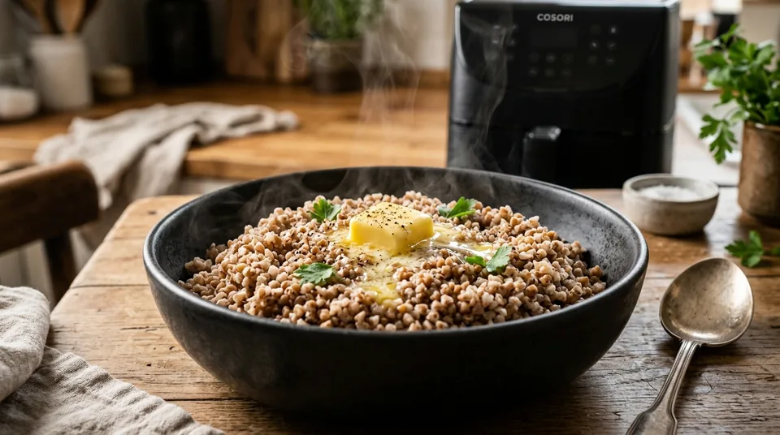
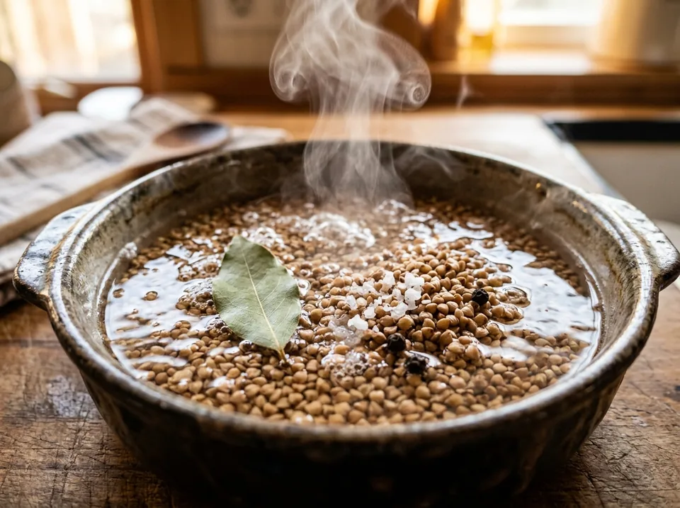
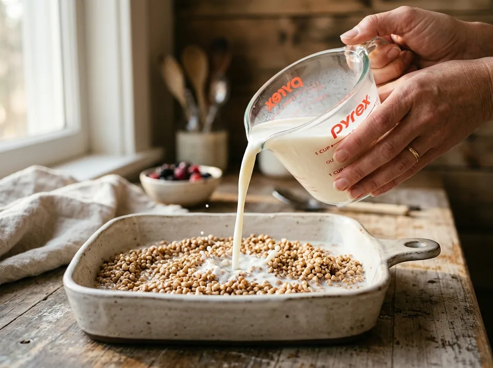
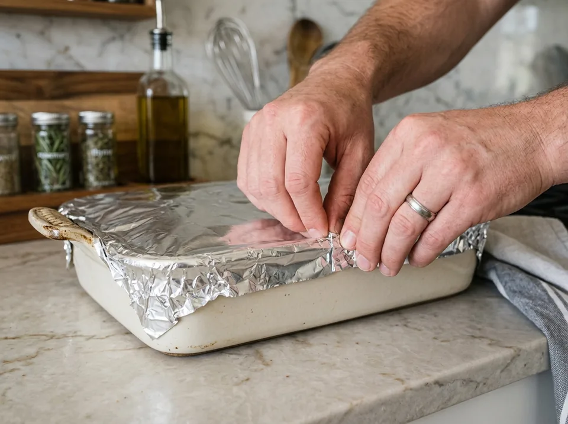

Завтраки · 26–28 минут
Томленая сливочная гречка
Нежнейшая, рассыпчатая и бархатистая гречневая каша на молоке 2.5% со сливочным маслом и эффектом томления в русской печи. Идеальный сочный гарнир к запеченной куриной грудке.
К ингредиентам
Ингредиенты · 3 порций
- Гречневая крупа (ядрица) — 240 г (сухая)
- Крутой кипяток (1-й этап) — 350 мл
- Молоко 2.5% (горячее) — 350 мл
- Соль мелкая / морская — 1 ч. л. без горки (~5 г)
- Сливочное масло 82.5% — 15 г (по 5 г на чел)
- Свежемолотый черный перец — 1/4 ч. л.
- Лавровый лист (по желанию) — 1 шт
Пищевая ценность
На 100 г: 132 ккал · Б 4.8 г · Ж 3.5 г · У 19.5 г
Шаг за шагом
Промывка и запаривание в кипятке (15–20 мин)
240 г гречки промойте 2–3 раза холодной водой и полностью слейте влагу. Пересыпьте крупу в жаропрочную форму (объемом от 1.5 л), добавьте 1 ч. л. соли, черный перец и лавровый лист. Залейте 350 мл крутого кипятка и оставьте на столе на 15–20 минут. Зерна впитают воду, набухнут и начнут размягчаться.

Введение горячего молока 2.5%
Подогрейте 350 мл молока 2.5% в микроволновке или ковшике почти до закипания (горячее молоко не остановит прогрев зерен). Влейте горячее молоко в форму прямо к набухшей гречке и аккуратно перемешайте лопаткой.

Герметичная запечатка фольгой в 2 слоя
Плотно накройте форму двумя слоями фольги, тщательно обжав бортики вокруг емкости. Это критически важно: в аэрогриле мощный конвекционный обдув, без фольги верхние зерна высохнут, а под фольгой создается эффект томления в глиняном горшочке.

Томление в аэрогриле (165–170°C, 26–28 мин)
Установите форму в корзину аэрогриля. Выпекайте при температуре 165–170°C в течение 26–28 минут. Умеренная температура предотвращает бурное закипание молока и позволяет крупе впитать всю молочную сливочность.
Дозревание на остаточном тепле и сливочное масло
Достаньте форму из аэрогриля, не вскрывая фольгу, и оставьте на столе на 10–15 минут (в это время можно быстро запечь курочку!). Перед подачей снимите фольгу, удалите лавровый лист, положите 15 г сливочного масла и перемешайте. Каша получается бархатистой, рассыпчатой и нежной!